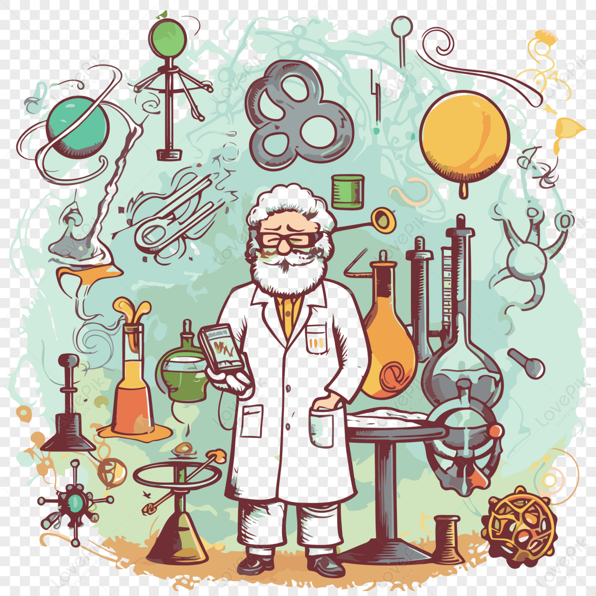
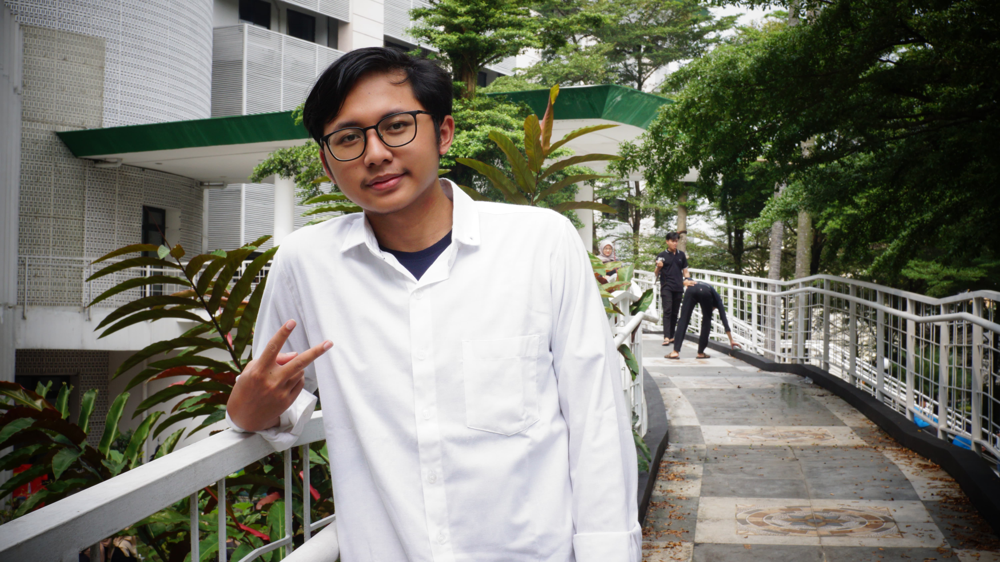

FISIKA INSTRUMENTASI
level up your physics with smart instruments

Biodata Diri
| Nama | : | Nabiel Salam |
| Universitas | : | UIN Syarif Hidayatullah Jakarta |
| Jurusan | : | Fisika Instrumentasi |
| NIM | : | 11220970000040 |
| Alamat | : | Tangerang Selatan |
| : | Nabilllm3@gmail.com |

Tentang Fisika Instrumentasi
Fisika Instrumentasi adalah cabang ilmu yang menjadi jembatan antara teori fisika murni dengan aplikasi rekayasa praktis. Berikut adalah beberapa bidang dari fisika instrumentasi: